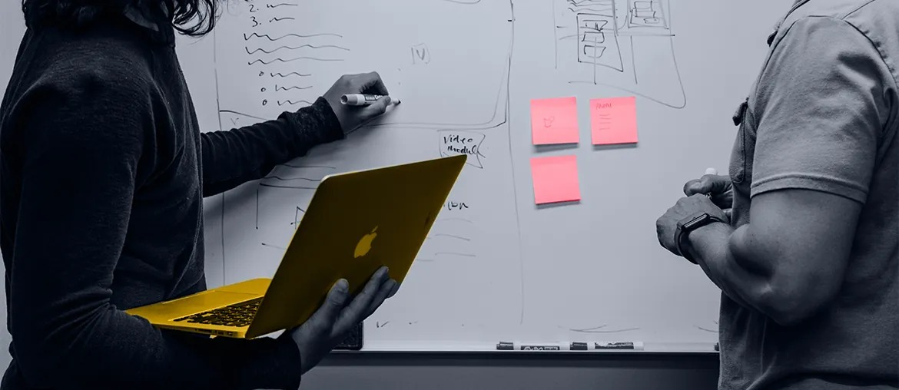

01
Workflow map and failure audit
We trace the path from recruiter call to shortlist. We check CRM, portal, and Talent Hub handoffs.
Aspire already sells speed, clarity, and candidate quality. The next step is a workflow that matches that promise. Senior searches then move with less admin and more trust.
We saw Aspire carrying searches like Director of Cloud Transformation. That puts pressure on candidate presentation, CRM handoff, and reporting.
Senior hiring needs trust. A weak portal, slow handoff, or missed note breaks that trust fast.
Hinterview, Talent Hub, and public web flows should feel like one reliable system.
The signal tells us Aspire is handling more complex and more senior searches. Your site also promises AI with a human touch. That raises the bar on your own workflow. If notes, video shortlists, or client feedback feel fragile, good searches slide back into manual chasing. Then recruiters spend time on admin, not hiring.
We would ship a focused workflow hardening project. Weekly demos keep scope tight and clear.
We trace the path from recruiter call to shortlist. We check CRM, portal, and Talent Hub handoffs.
We remove weak points in upload, documents, and notes. Fewer searches then fall back to manual chasing.
We add views for recruiter activity and shortlist progress. Managers then spot stalled client actions faster.
We finish with regression coverage and release checks. Your team then improves safely, without fresh debt.
Elinext is a full-cycle software company. We have worked since 1997 and keep around 700 in-house specialists. We use no freelancers, which helps on long platform work. We hold ISO 27001 and ISO 9001. Our client base includes SiemensBroadcomVolkswagenTRUMPF. We also cover portals, QA automation, DevOps, and integration work in one team. That fits Aspire, where steady releases and safe recruiter data both matter.
Built a custom applicant tracking system with candidate, vacancy, and admin modules. It streamlined active hiring.
View case study
Cut development time by 40% for an infrastructure software provider. Elinext automated releases, tests, and update flows.
View case studyIf this feels right, we can map the first six weeks.
Start the conversation